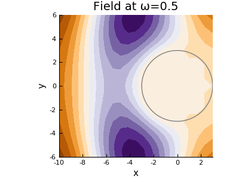
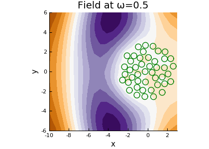
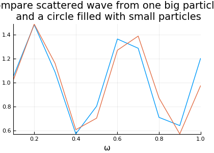

Random particles in a circle
The code particlesincircle.jl compares the scattered wave from one big circle, with the scattered wave from a circle filled with small particles.
using MultipleScattering
#You can also pick your own shape, an generate random particles inside it
#with a certain radius ands volume fraction
radius = 0.3
volfrac = 0.45
centre = [0.,0.]
big_radius = 3.0
particle_medium = Acoustic(2; ρ=0.0, c=0.0) # 2D particle with density ρ = 0.0 and soundspeed c = 0.0
particle_shape = Circle(radius)
circle = Circle(centre, big_radius)
particles = random_particles(particle_medium, particle_shape; box_shape = circle, volume_fraction = volfrac, seed=1)
x = [-10.,0.] # position to receive the reflected wave
host_medium = Acoustic(2; ρ=1.0, c=1.0)
source = plane_source(host_medium; position = x, direction = [1.0,0.])
simulation = FrequencySimulation(particles, source)The particles chosen are impenetrable, i.e. the wave is 100\% reflected. So this circle filled with scatterers should act like one big particle.
big_particle = Particle(particle_medium, circle)
big_particle_simulation = FrequencySimulation([big_particle], source)
#define a bounding box for plot
bottomleft = [-10, -2*big_radius]
topright = [big_radius, 2*big_radius]
box = Rectangle(bottomleft, topright)
using Plots
height = 300
#gr(size=(1.4*height,height))
pyplot(leg=false, size=(1.4*height,height))
ω = 0.5
plot(big_particle_simulation, ω; res=15, bounds = box);
plot!(big_particle)
#savefig("plot_field_big.png")
plot(simulation, ω; res=15, bounds = box);
plot!(particles, linecolor = :green)
#savefig("plot_field.png")Resulting in the figures:
 
If we compare the response measured at the listener [-10., 0.], they should be very similar:
#define angular frequency range
ωs = collect(LinRange(0.1,1.0,10))
result = run(simulation, x, ωs)
big_result = run(big_particle_simulation, x, ωs)
plot(result, lab = "scattering from particles")
plot!(big_result,
lab = "scattering from big particle",
title="Compare scattered wave from one big particle, \n and a circle filled with small particles")